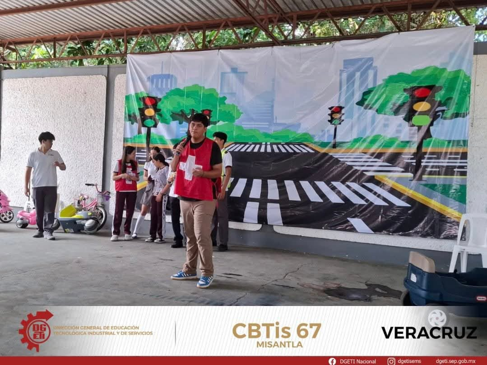
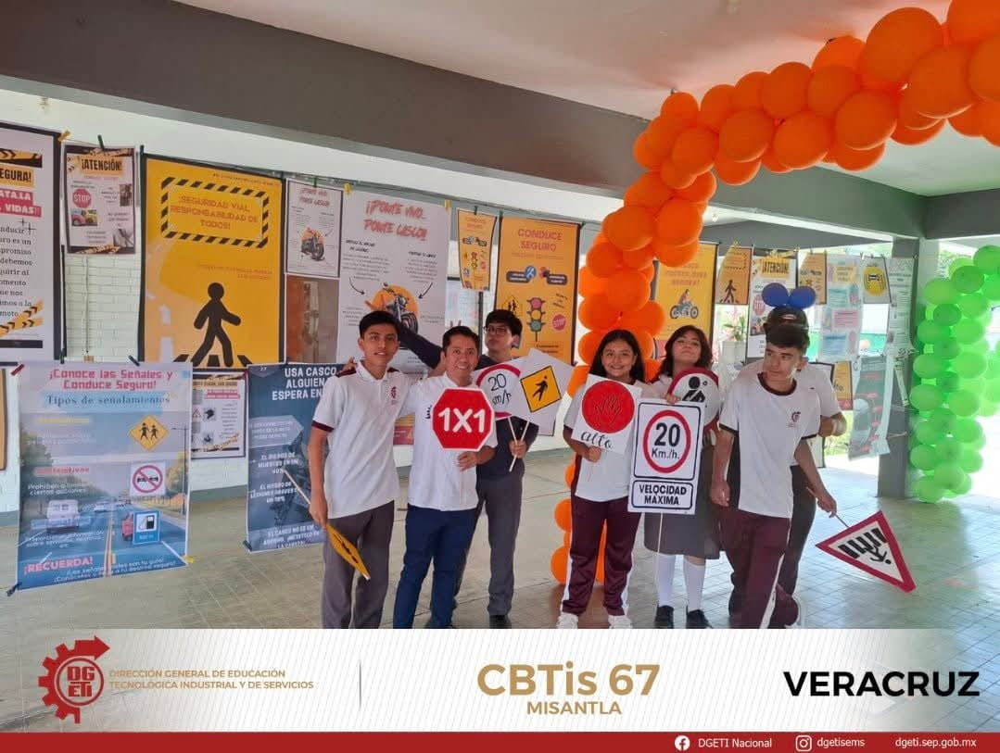
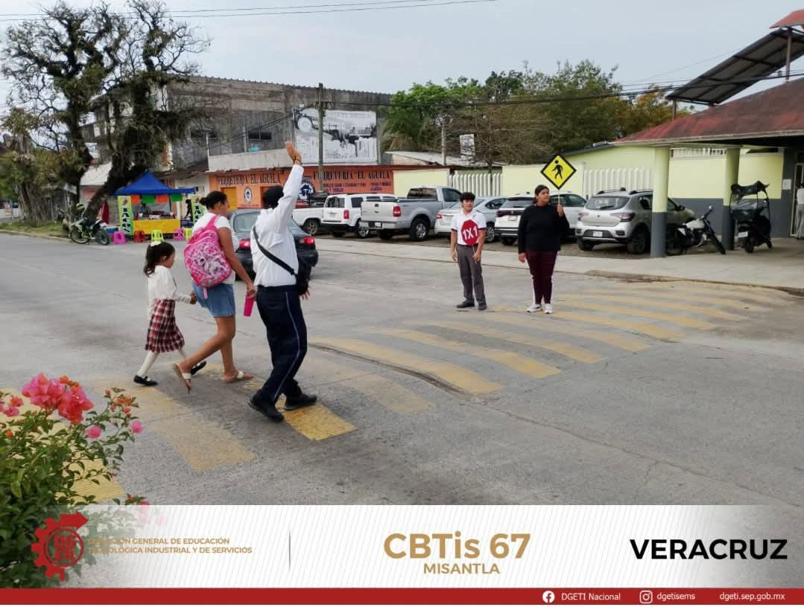
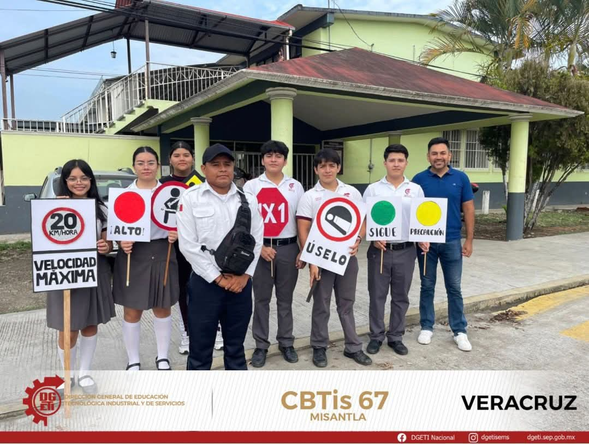
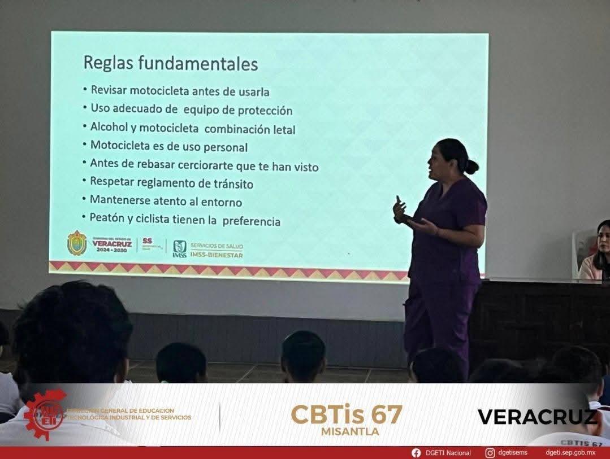
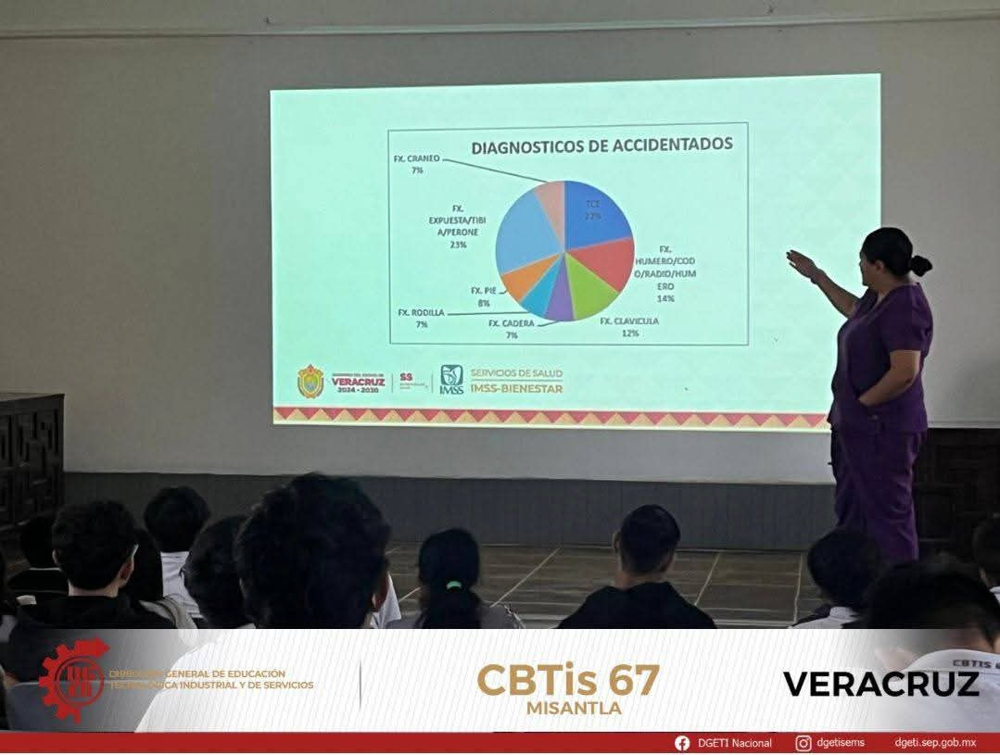
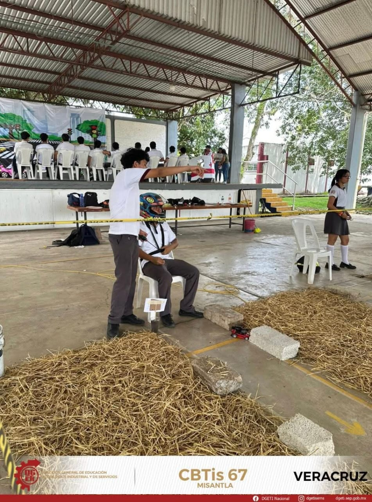

Objetivo del Proyecto
El proyecto “CBTis.67 Conduce Más Seguro” busca fomentar una cultura vial responsable entre los jóvenes de Misantla, Veracruz. A través de talleres, campañas informativas y simulaciones de conducción segura, se pretende reducir los accidentes de tránsito causados por imprudencia o desconocimiento de las normas.
Video: La Importancia de la Conducción Segura
¿Por qué es importante? Datos que Salvan Vidas
Panorama Nacional de Accidentes Viales
Los accidentes de tránsito en México son la **primera causa de fallecimiento** en jóvenes de entre **15 y 29 años** de edad. Esto subraya la urgencia de la educación vial entre la población estudiantil.
- Se estima que en promedio **22 jóvenes mueren diariamente** a causa de siniestros viales en el país.
- Entre el **40% y el 60%** de los incidentes mortales están directamente relacionados con el **consumo de bebidas alcohólicas**.
- Los accidentes con participación de jóvenes ocurren principalmente durante el **fin de semana** (jueves a domingo) y en la madrugada.
Tomar decisiones responsables al volante es la forma más directa de cambiar estas estadísticas.
Tipos de Distracción al Volante: El Peligro Silencioso
Cualquier actividad que desvíe tu atención de la carretera, incluso por un segundo, es una distracción y aumenta el riesgo de choque. Se clasifican en tres tipos:
-
Visual: Apartar la vista de la carretera. (Ejemplo: mirar el celular o un accidente).
-
Manual o Física: Quitar las manos del volante. (Ejemplo: comer, maquillarse o manipular la radio).
-
Cognitiva: Dejar de pensar en la conducción. (Ejemplo: hablar por teléfono, preocuparse o ir pensando en pendientes).
**Dato clave:** Enviar o leer un texto te quita la vista de la carretera durante 5 segundos, lo que a velocidad de autopista es como conducir la longitud de un campo de fútbol con los ojos cerrados.
Recomendaciones para Conducir Seguro
- Usa siempre cinturón de seguridad o casco protector, tú y todos tus pasajeros.
- **Guarda el celular:** Evita toda distracción, especialmente el uso de dispositivos móviles.
- Respeta los límites de velocidad y las señales de tránsito.
- Nunca manejes bajo los efectos del alcohol o drogas; designa un conductor.
- Revisa periódicamente frenos, llantas y luces de tu vehículo.
- Descansa bien antes de un viaje largo para evitar la fatiga al volante.
- Prioriza y cuida siempre a peatones, ciclistas y motociclistas.
Impacto en la Comunidad
Misantla, Veracruz, cuenta con una población activa y en constante movimiento. Este proyecto involucra a estudiantes, docentes y autoridades municipales, generando conciencia vial.
Se proyecta una reducción del 30% en accidentes viales entre jóvenes y un aumento significativo en el uso del cinturón de seguridad y el casco.
Galería del Proyecto
Imágenes de nuestras campañas y talleres en el CBTis No. 67 (Asegúrate de tener estos archivos en tu carpeta).







Video Recomendado: Líneas y Señales de Tránsito
Aprende a interpretar las señales de la carretera
Encuesta: ¿Qué tan seguro conduces?
Responde esta breve encuesta y reflexiona sobre tus hábitos al conducir o al viajar como pasajero.
Participa en el Proyecto
Si te gustaría unirte o aportar ideas para mejorar la seguridad vial en Misantla, completa este formulario:
Información Complementaria
Conducir con responsabilidad no solo protege tu vida, también la de quienes te rodean. En México, los accidentes de tránsito son una de las principales causas de muerte entre jóvenes. Por eso, el CBTis No. 67 promueve campañas de concientización que incluyen:
- Charlas informativas con expertos en educación vial.
- Simulaciones de conducción segura y realidad virtual.
- Campañas visuales en redes sociales y en la escuela.
- Concursos de carteles sobre seguridad vial.
Recordemos que manejar con precaución no solo es una obligación, sino un acto de respeto hacia los demás. ¡Conduce más seguro, piensa en tu futuro!